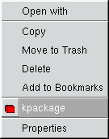
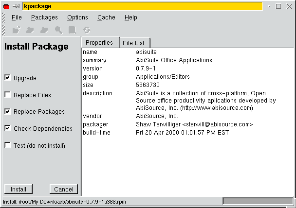
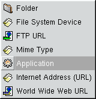
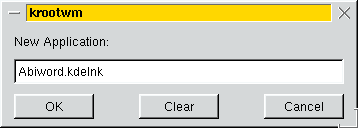
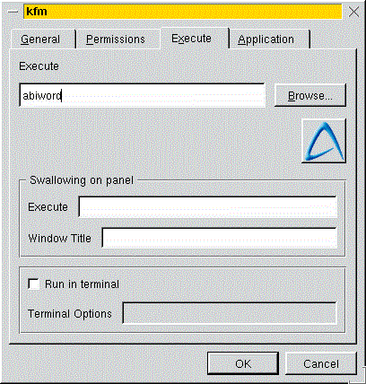

About AbiWord
About Open Source
Index
Contents
What's New
Check Version
Introduction
Installation
Getting Started
The Workspace
Entering Text
Formatting
Edit Commands
Paragraphs
Styles
Inserting Objects
Printing
Preferences
Shortcuts
abisource.com
FAQ
Credits
Search
|
|
Installing AbiWord on Linux / INTEL
AbiWord should install and run properly on any Linux system with INTEL (or
INTEL-COMPATIBLE) processor. It has been packaged in several different industry
standard distribution formats to simplify the installation. There is also a GNOME
specific implementation that intergrates well with the desktop.
- RPM -- RedHat 5.2 or later, SuSE 6.1 or later
- DEB -- Debian 2.1 (Slink) or later
- Slp -- Stampede Linux
- TAR -- works anywhere
A more detailed version of these instructions is contained in the README file.
RPM
- Download the distribution files (abisuite-0.7.9-1.i386.rpm,
2.6MB).
- Become superuser and enter the command:
rpm - Uvh abisuite-0.7.9-1.i386.rpm
- If you are using KDE, right click on the rpm file, and select kpackage.

When kpackage comes up, click on install. If you have any unsatisfied dependencies,
you will have to install those before you can install Abiword.

- This will install AbiWord and supporting files to /usr/share/abisuite.
Symbolic links called AbiWord and abiword will be placed
in /usr/bin/X11 but not to the actual executable. Using the -
Uvh option instead of - will take care of replacing the older version
of AbiWord for people who are updating.
- For more information on RPM package dependencies, please see the README.
DEB
- Download the distribution files (
abisuite_0.7.9-1_i386.deb, 2.6MB).
- Become superuser and enter the command
dpkg - I abisuite_0.7.7-1_i386.deb
- This will install AbiWord and supporting files to /usr/share/abisuite.
Symbolic links called AbiWord and abiword will be placed
in /usr/bin/X11 but not the actual executable.
- For more information one DEB package dependencies, please see the
README.
SLP
The SLP installation process should be as simple as the
DEB or RPM installation. However, we currently do not have
the Stampede Linux distribution installed and have not tested our Stampede
Linux package builds. These files are automatically generated via Alien.
If you try the SLP distribution, we encourage you to send a message to the AbiWord development mailing list
with an account of your experiments.
- Download the distribution files (
abisuite-0.7.9.slp, 2.3MB).
- Install via the Stampede package manager.
- This will install AbiWord and supporting files to /usr/share/abisuite.
Symbolic links called AbiWord and abiword will be placed
in /usr/bin/X11 but not the actual executable.
- For more information on SLP package dependencies, please see the
README.
There are two versions of the Tar files
Our goal is to make use of a number of shared libraries on your system. If you don't know
what this means, select the static version.
- Download the distribution files (
abisuite-0.7.9-Linux_i386_static.tar.gz, 3.3MB).
- Copy the files to a directory that you have permission for and open the
files:
gunzip - c abisuite-0.7.9-Linux_i386_static.tar.gz | tar xvf -
... or, if your tar command supports the ' z' flag:
tar xvzf abisuite-0.7.9-Linux_i386_static.tar.gz
Both these commands will create the directory abisuite-0.7.9-Linux_i386_static.
- Change to that directory and become superuser.
- Run the install script:
/install.sh
- By default, this will install AbiWord and supporting files to the /usr/local/AbiSuite
on your hard drive. You will be given the opportunity to change this.
- You will also have the option to create links to the executable in a common bin
directory. By default, this is /usr/local/bin.
- Please consult the README file for additional details.
- Dynamic Tar Files
- The installation process for the dynamic Tar files (abisuite-0.7.9-Linux_i386_dynamic.
tar.gz, 2.6MB) is identical. Simply substitute _ dynamic for _ static
in steps 1 and 2 above. If you want to read more about which libraries
and versions that the dynamic version uses, please consult the README.
Saving under Linux
If you are saving under linux, it is recommended that you save in your
/home directory, unless you dual boot(see below). If you have a lot of
documents you should put them in a directory such as /home/documents.
If you want to save a document remember you must have permission to
write to it. Sometimes you may not be able to save a document because you
do not have write access. In that case, it is suggested that you try to
"Save As" somewhere else.
Dual Booting Windows and Linux
If you dual boot Windows and Linux, and you want to use the files under
both systems, you will have to save your files on a FAT or FAT32 partion,or
on a floppy disk, as windows can not access Linux partions, . It is recommended
that you save the files in a directory such as "My Documents". Remember,
under Linux you must have permission to write to that directory. If you
don't, please contact your administator.
Dual Booting Beos and Linux
If you dual boot Beos and Linux, then it is recommended that you save
the files on Beos's native filesystem, under the one directory.
KDE and Abiword
After installing Abiword on your machine, you can then set up Abiword
to work with KDE. Right click on yur desktop, and select "New", and then
"Application".

You should then type in "Abiword" in the box that appears.

After this, type in any comments that you want, and in the executable
box, type in "abiword", all in lower case.
If you want Abiword icons, then you will have to copy them from /usr/share/Abisuite/icons,
to /usr/share/icons, in order to be able to select them. Your finsihed
screen should look like the one below.

Now all you have to do is press the "OK" button and the Abiword icon
will appear on your desktop. If you like, you can put it onto your panel
by just dragging it from the desktop. |